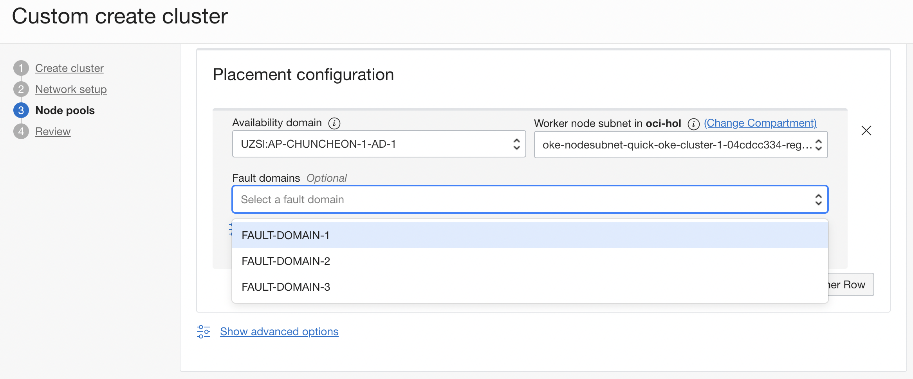

Support for fault domains in node pool placement configuration
Node Pool 생성시 Availability Domain을 설정시 Fault Domain을 사용자가 지정할 수 있습니다.
업데이트 사항
Node Pool 설정이 Worker Node가 위치할 Fault Domain 사용자 지정
Worker Node에 대한 Node Pool 생성시 Availability Domain을 설정시 Fault Domain을 지정할 수 있습니다. 따로 지정하지 않는 경우, AD내에 Fault Domain내에 균등하게 분배됩니다. 이제 원하는 Fault Domain을 지정할 수 있으며, 하나 이상 지정할 수 있습니다.

이 글은 개인으로서, 개인의 시간을 할애하여 작성된 글입니다. 글의 내용에 오류가 있을 수 있으며, 글 속의 의견은 개인적인 의견입니다.